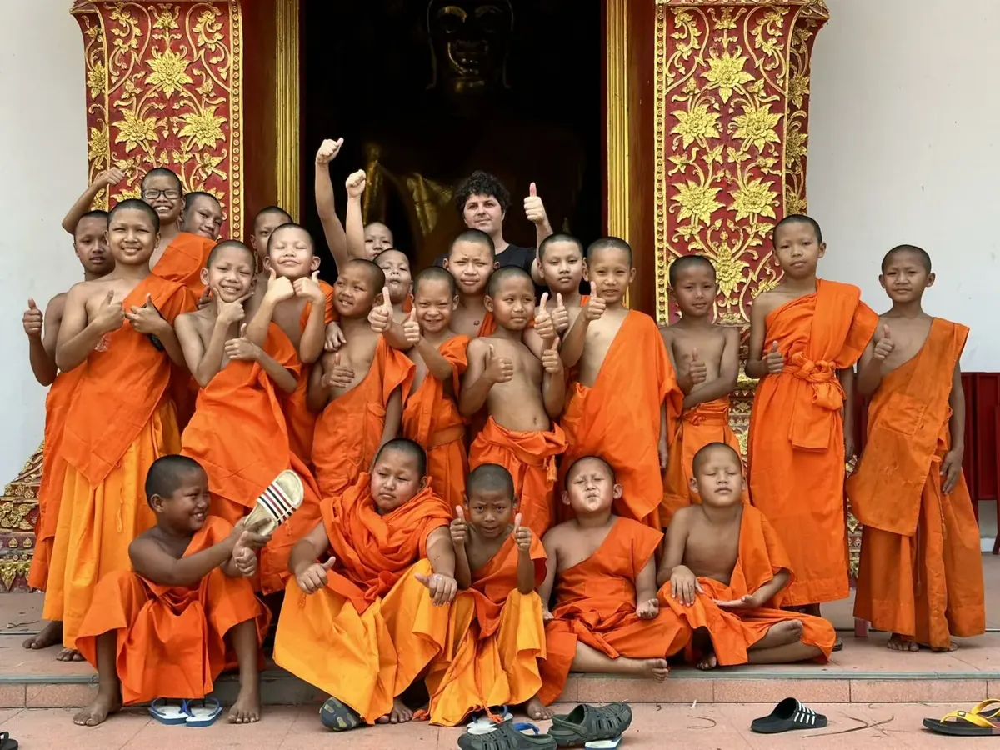
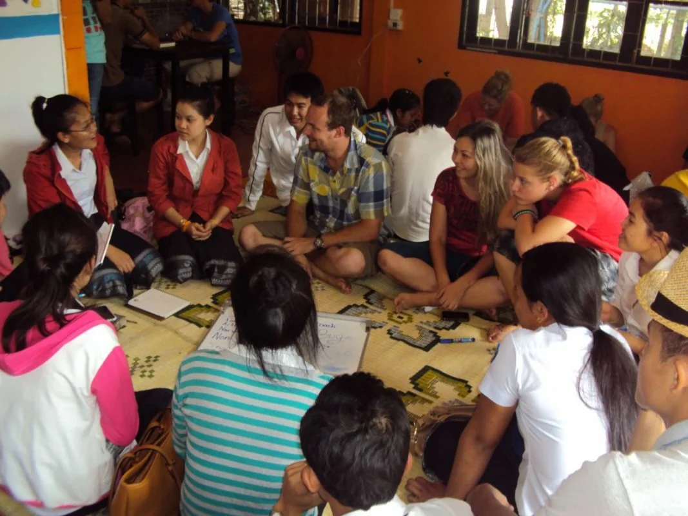
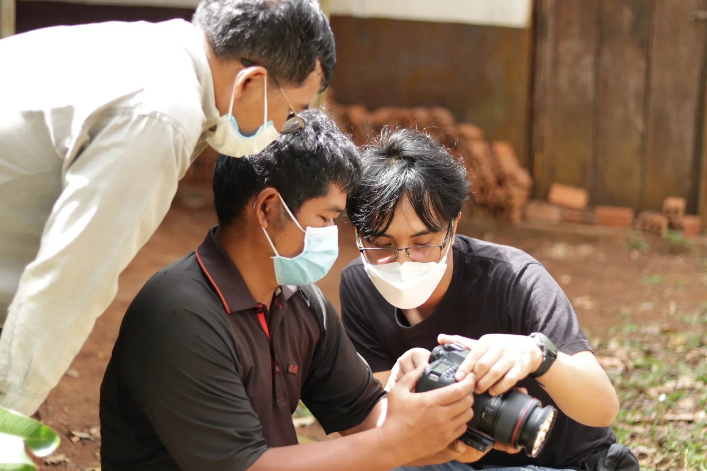
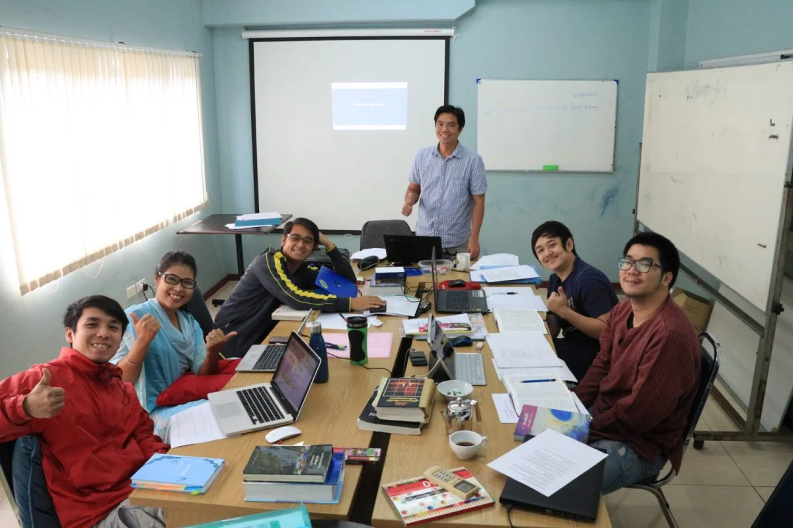
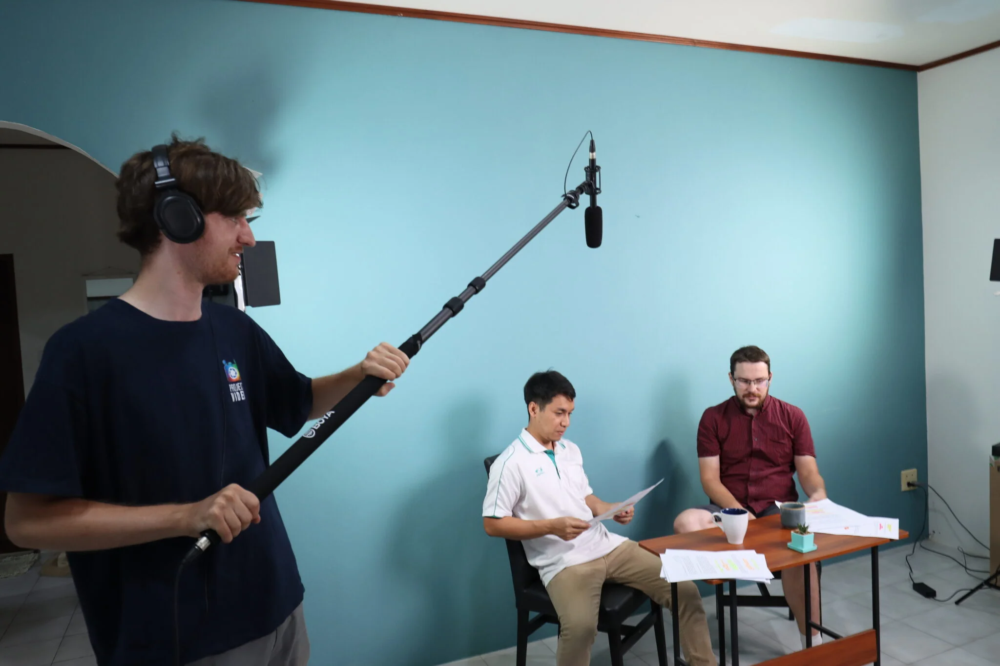
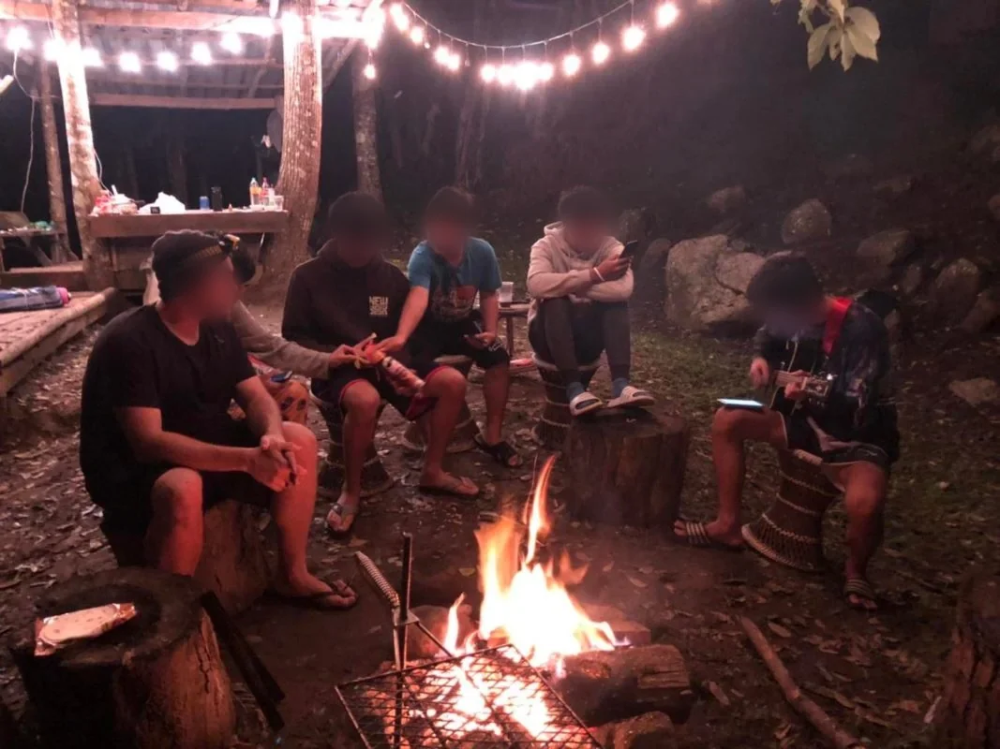

You tell stories
You shoot, you cut, you write, you frame. You're tired of pointing your lens at content. You want it pointed at something that matters.
Chiang Mai, Thailand
A base for young adults, makers and storytellers in the mountains of northern Thailand. Come for six months. Leave different.
The city
A 700 year old temple town ringed by mountains, full of night markets, studios, coffee and cheap street food. Digital nomads cross the world for Chiang Mai. You will live here.





Who we are
Since 1960, Youth With A Mission has been a global movement of Christians giving their twenties to two simple ideas: know God, and make Him known. Today that movement reaches more than 180 nations. Our base in Chiang Mai is one small, stubborn outpost of it.
So yes, this is a faith thing. We follow Jesus, and we won't hide that behind creative language. If you come here it will shape everything: how we train, how we travel, what we make, and why.
Who comes here
You shoot, you cut, you write, you frame. You're tired of pointing your lens at content. You want it pointed at something that matters.
You're 19 and everyone keeps asking about your plan. You'd rather spend a year finding out who you are before you pick one.
Design, music, paint, code. You're good at your craft, and you carry a quiet suspicion it was given to you for something bigger than a portfolio.
No creative label, no grand plan. Just a nagging sense that life is bigger than the feed. That counts. That's how most of us got here.
The schools
Every school lives at the base and ends with your feet somewhere new in Asia. Ask us for current dates and fees before you plan around them.

The front door
Discipleship Training School
Five months of learning who God is and who you are, then taking it on the road across Asia. Almost everything else here expects you to have done it first.
It comes in two halves. A lecture phase, living in community at the base rather than just attending class, then an outreach phase where the school splits into teams and goes. No theology degree, no ministry experience and no particular plan is assumed on the way in.
And you do it here. Three hundred temples inside the old city moat, night markets where dinner costs two dollars, mountains half an hour from your front door, and a base working among six or more people groups in the city and the region around it. It is a good place to be nineteen and unsure, and a good place to stop being unsure.
Learn more
For the storytellers
Films for unreached Asia
Gospel films, dubbing and media training for peoples who have never heard any of it in their own language.
Learn more
สอนเป็นภาษาไทย
School of Biblical Studies
Every book of the New Testament, studied inductively, on six to eight hours a day. Taught in Thai, and open to people who have not done a DTS.
Learn more
For the makers
Film, animation and still media
A YWAM communication ministry in its own right, with four of its teams based here. Training is organised by medium rather than by term.
Learn more
For the teachers
Bible Education Leadership Training
Equipping leaders who have little access to Biblical training, in their own language. Since 1995, in over 60 countries.
Learn moreLife here



"I came for the filmmaking. I stayed because for the first time my work and my faith weren't living in separate rooms."
Nadia, 24, Brazil
"Sunday worship on the rooftop, geckos on the wall, mangoes from the market. I've never felt further from home, or more at home."
Jonas, 20, Germany
"I wasn't even sure I believed any of it when I landed. Nobody panicked. They just let me ask everything."
Priya, 26, United Kingdom
Straight answers
Our schools are built on following Jesus and everything here runs on that. You don't need to have it all figured out, and honest doubt is welcome. But you should want to explore faith seriously, because you'll be swimming in it.
Each program has a fee covering housing, meals and training, plus outreach travel costs. Most students fundraise part or all of it. Exact numbers live on each program page, so there are no surprises when you arrive.
You enter Thailand on an education visa arranged with our team before you fly. We walk every student through the process step by step. It's more paperwork than drama.
For DTS, none at all. For Project Video and Create International, bring a working knowledge of your craft and a willingness to be stretched. SBS is open to people who have not done a DTS, and is taught in Thai.
Beyond the classroom
Ongoing work that runs all year, which students plug into alongside their school.

Since 1994
A home for children who have none
Long term care for children removed from unsafe homes, and a village church that grew up alongside it.
Learn more
Santitham
House Full of Love
A community centre for migrant families: English, homework help, sport, digital skills and a Sunday programme.
Learn moreGrace International School
Teaching posts in Chiang Mai
A family cannot stay in the field if there is nowhere for their children to learn. Grace is where many of them go, and it needs teachers.
Learn more
Shan, or Tai Yai
A community centre in Chiang Mai
English classes, a teen Bible study, a Shan church, and a discipleship school rebuilt to fit around a working week.
Learn more
Care
One to one, and a silent retreat
Somewhere to be honest about doubt and struggle without having to perform, plus three full days of silence once a year.
Learn moreHubbed here
The business is the mission
A real, profitable business run as the ministry itself, which matters in places where a missionary visa is not on offer.
Learn moreOne more thing
The lanterns go up over Chiang Mai once a year. The door here is open all of it.